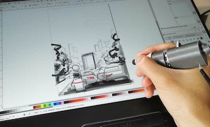
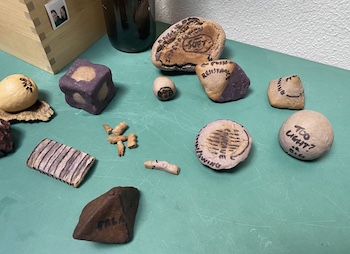
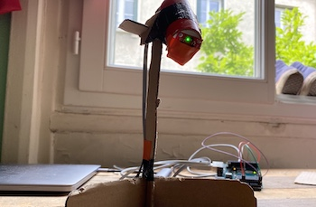
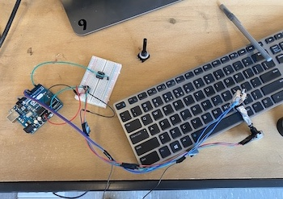

Selected Design Projects
The following is a introduction to some of the work I've done over the last several years. Some projects have more photos, and videos.
For a PDF version of this portfolio, with a selection of these projects: portfolio.pdf
|
|

The FidgiPen introduced tactile controls for fidgeting, and to control stroke, color and undo/redoAnnotated forms from early experiments in shapes using clay and salt dough

The AirSampler used an infrared sensor to track movement and map that to an archive of sound samplesPrototyping and debugging the different controls of the FidgiPen in the lab |
|
|

|
|
Other Projects
These are more smaller projects I've worked on, including more traditional graphic design and illustration, as well as interaction and experience design.
For examples of my work as a photographer for the Art Department at UBC, please see the exhibition and event archive from 2016-2018 at: gallery.ahva.ubc.
|
|

{kind=link}
{kind=link}
{kind=link}
{kind=link}
{kind=link}
{kind=link}
{kind=link}
{kind=link}
{kind=link}
{kind=link}
{kind=link}
{kind=link}
{kind=link}
{kind=link}
{kind=link}
{kind=link}
{kind=link}
{kind=link}
{kind=link}
{kind=link}
{kind=link}
{kind=link}
More Projects
- HelpKiosk - UBC eDAPT Lab - 2017-18
#usability-testing #iterative-design #user-research #analysisIn collaboration between Samsung R&D Vancouver and the eDAPT Lab at the University of British Columbia, I led a research project to redesign a kiosk to help seniors learn to use smart phones. With one other research assistant, we updated an old version of the application, conducted initial user testing, iterated on the design of the experience, then conducted a formal usability study, using thematic analysis to process the interviews, which was presented as a poster at the ASSETS '18 conference.
- TerraTree - Enschede, the Netherlands - 2019
#rapid-prototyping #interaction-design #multi-modal-interactionAn interactive, multi-modal installation in a historic city park in the city of Enschede, NL. This was designed and developed over the course of 3 months, in cooperation with local city planners and the local historical society, through the University of Twente.
- Tippie – EIT Budapest Summer School - 2019
#user-research #business-strategy #rapid-prototypingA cashless payment solution for street performers, community art events, and other traditionally cash-based donations, inspired by a week of user research conducted in Budapest. Created during the European Institute of Innovation and Technology - Digital Finance summer school in Budapest, in partnership with Novopayments.
- WorkeR - University of Twente - 2018-19
#storyboarding #user-research #user-centered-design #business-strategyA cross-discipline, virtual reality training environment to allow different first responders (Police, Medical, Fire) to train together in virtual scenarios without being collocated. Based on four rounds of user studies conducted with the Fire Department in Enschede, NL, and other paramedics around The Netherlands and Europe.
- Digital Education Tools - Ck-12 Foundation - 2011-16
#illustration #visual-design #interaction-design #prototypingStarted as an intern, then designer, then contractor, I mocked up website and app prototypes for the executive team. I helped develop the concept and design of a new line of “Study Guides”, and created hundreds of illustrations for science and math textbooks. I also helped to debug, test and refine beta content tools for teachers to develop their own interactive problem sets.
- Other design projects - 2016-19
#user-research #user-centered-design #interaction-design #visual-designSeveral more projects and examples from my undergraduate and masters programs focused on human-computer interaction and user experience design.
Art Projects
- Melt Collective - 2017-18
#design-thinking #prototyping #iterative-design6 months in an artist residency at the Melt Collective lab, helping to ideate and prototype creative uses for recycled plastic. I joined various multi-discplinary teams including artists, scientists, engineers, and more. My main project involved exploring ways to melt and mold plastic bags, and building a prototype archway from bricks manufactured using this technique.
- Other art projects - 2014-19
#visual-design #interaction-design #prototyping #iterative-design #illustrationVarious other art projects from my undergraduate art degree and beyond: ranging from traditional painting, to photography, to experimental wearables, and robotic sculptures.
Coursework
I completed a dual Master of Science degree at the University of Twente and the University of Paris-Sud, through the European Institure of Innovation and Technology Digital Masters School. My focus was in human-computer interaction design, with a minor in innovation and entrepreneurship. The courses concentrated on user-centered design practices, user-experience design, user research, techniques for rapid prototyping, and capturing and designing from user insights.
My undergraduate studies in computer science focused on human-computer interaction and user-centered design methods, and software engineering (web applications, database design and algorithms). In visual art, my work focused on the study of humans and technology: the technohuman, the “non-spaces” created by technology, and the way that interactions with technology facilitate humanity.
Other Projects
-
Collaboratively designed and ran a study that explored how people use different social media and messaging platforms to organize community events. Concluded the study with a set of design guidelines to support local community organizing, and a medium fidelity prototype implementing them. more
-
Collaboratively designed and ran a study into home-delivery grocery systems, with a focus on integrating them into workflow in the kitchen (e.g. smart kitchens, meal planning, etc.) more
-
Built from scratch the backend of a RESTful API to search, and sort all the enrollment data at University of British Columbia. Then, built a Javascript front-end using the latest libraries (React) to display the data and allow users to explore it in a web-UI environment. (link to repo)
-
Built an Android app using the local (Vancouver) bus database, to plan trips, and live-plot buses.
-
Multiple artworks and installations involving robotics, Arduinos and web applications, as well as some works in more traditional mediums. more
-
Built several simple games as proofs of concept for functional programming and AI courses. (link to repo)
-
For more past and ongoing projects see my github repo.
Some varied art projects:
-
glitch.me profile - featuring some experiments in VR and AR art
- conspiracy theory generator
- week 3
- Fantastic Beasts Page
- a basic fractal animation